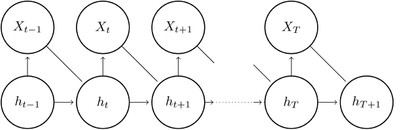
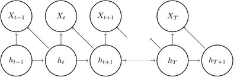
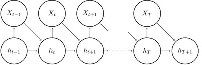

SV models with leverage effect
The leverage effect is the phenomenon that volatility tends to rise following a drop in returns. In SV models the leverage effect is modeled by letting the noise terms in the two equations be correlated. SV models with leverage effect can be written as:
Xt = σX exp(ht/2)εt, (1)
ht+1 = ϕht + σηt, (2)
where the pairs (εt, ηt) are iid with E(εt) = E(ηt) = 0, Var(εt) = Var(ηt) = 1 and corr(εt, ηt) = ρ.
If ρ < 0, which is the standard case, a drop in returns at time t then tends to give increased volatility at time t+1.
Due to correlated noise terms, the structure in SV models with leverage effect is (slightly) more complicated than in the models without leverage effect. It is therefore also more difficult to find an expression for the joint density function, p(X, h|θ), in this case.
SV models on the form (1-2) can be represented graphically as:

All paths to Xt and ht+1 goes via/through ht, so the pair (Xt, ht+1) is conditionally independent of previous variables given ht.
This leads to the following expression for the joint density:
p(X,h|θ) = p(h1|θ) Πp(Xt, ht+1|ht, θ)
This expression may be further simplified by factorizing p(Xt, ht+1|ht, θ). This can be done in two ways:
a. We can use that p(Xt, ht+1|ht, θ) = p(Xt|ht+1, ht, θ)p(ht+1|ht, θ) and write the joint density as p(X,h|θ) = p(h1|θ) Πp(Xt|ht+1, ht, θ)p(ht+1|ht, θ)
This is represented in the folowing graph

b. Alternatively we can use p(Xt, ht+1|ht, θ) = p(Xt|ht, θ)p(ht+1|Xt, ht, θ), which gives the following expression p(X,h|θ) = p(h1|θ) Πp(Xt|ht, θ)p(ht+1|Xt, ht, θ). The graphical representation for this form is given by

The two forms should be equivalent, so it should in principle be possible to use both. However, as we shall see, it might be reasons to prefer one over the other.
The Gaussian leverage model
In the Gaussian leverage model it is assumed that the pairs (εt, ηt) are iid bi-variate normally distributed, with standard normal marginals. This is the most popular leverage model and it is a discrete time version of models used in option pricing.
Then εt|ηt ̴ N(ρηt, 1-ρ2) and we can write εt = ρηt + sqrt(1-ρ2)wt where wt is standard normal and ηt and wt are independent. Noting that ηt = (ht+1 – ϕht)/σ, the model can be written as:
Xt = σX exp(ht/2)ρ(ht+1 – ϕht)/σ + σX exp(ht/2) sqrt(1-ρ2)wt,
ht+1 = ϕht + σηt,
where wt and ηt are iid N(0,1).
On this form we may use the formulation a) for the joint density function, and we see that
h1 ̴ N(0,σ2/(1-ϕ2)), ht+1|ht ̴ N(ϕht, σ2) and
Xt|ht+1, ht ̴ N(σXρ exp(ht/2) (ht+1 – ϕht)/σ, σX2 exp(ht) (1-ρ2)). Thus it is easy to find an expression for log p(X, h|θ) here. See sdv_lev_1.tpl for how this can be done.
Alternatively we may use the other version. Noting that ηt|εt ̴ N(ρεt, 1-ρ2), we may write ηt = ρεt + sqrt(1-ρ2) vt, where vt ̴ N(0,1) and vt is independent of εt. Then, using that εt = Xt exp(-ht/2)/σX, the model may be written as:
Xt = σX exp(ht/2)εt ,
ht+1 = ϕht + σρXt exp(-ht/2)/σX + σ sqrt(1-ρ2) vt ,
where εt and vt are iid N(0,1) by assumption.
Here it is seen that ht+1|(Xt, ht, θ) ̴ N(ϕht + σρXt exp(-ht/2)/σX, σ2(1 - ρ2)) and
Xt|(ht,θ) ̴ N(0, σX2 exp(ht)), so we can easily find an expression for log p(X, h|θ), see sdv_lev_2.tpl for how this can be done.
The two specifications for the Gaussian leverage model should give the same results. Comparing the par files sdv_lev_1.par and sdv_lev_2.par, we see that the results are practically identical, as they should. However, it seems that sdv_lev_1 runs somewhat faster and that the difference in run time is increasing in the size of the data set. This suggests that it might be preferable to use the parametrization given in sdv_lev_1, at least for large data sets. This version may be less intuitive than the other and is less commonly used, but it might actually be preferable because of the run time issue.
Leverage models with heavier tails and/or skewness
The moments of returns in the Gaussian leverage model are the same as in the basic SV model. In order to model both leverage effect and heavier tails and/or skewness, the following specification is used:
Xt = σX exp(ht/2)εt ,
ht+1 = ϕht + σρXt exp(-ht/2)/σX + σ sqrt(1-ρ2) vt,
where vt ̴ N(0, 1)and εt has some standardized continuous distribution. This looks like the formulation used to set up sdv_lev2, but here εt is not necessarily normally distributed. In the SV_lev_t model a standardized t-distribution is used for εt. This not only gives heavier tails in the returns, but also some tail thickness in the volatility process. This might actually be a favorable property. In SV_lev_st εt follows a skewed t-distribution, which captures skewness in returns, but also gives skewness in the volatility process. If εt has negative skewness and ρ also is negative, which is the usual case, then there is positive skewness in the volatility process. This seems like a reasonable property, since big positive “jumps” in volatility are more likely to occur than large negative ones.
For models on this form ht+1|(Xt, ht, θ) ̴ N(ϕht + σρXt exp(-ht/2)/σX, σ2(1 – ρ2)) no matter which distribution we choose for εt. When εt is not normally distributed, the distribution of h1|θ is unknown, so strictly speaking we cannot find an exact expression for p(X,h|θ) here. However it is still the case that E[h1] = 0 and Var(h1) = σ2/(1-ϕ2), and by assuming that h1|θ ̴ N(0,σ2/(1-ϕ2)), we find an approximate expression for the joint density. Since p(h1|θ) is only a minor contributor to p(X,h|θ), the error is small. The distribution of Xt|ht depends on the distribution used for εt, as can be seen in the tpl-files, sdv_t_lev.tpl and sdv_st_lev.tpl.